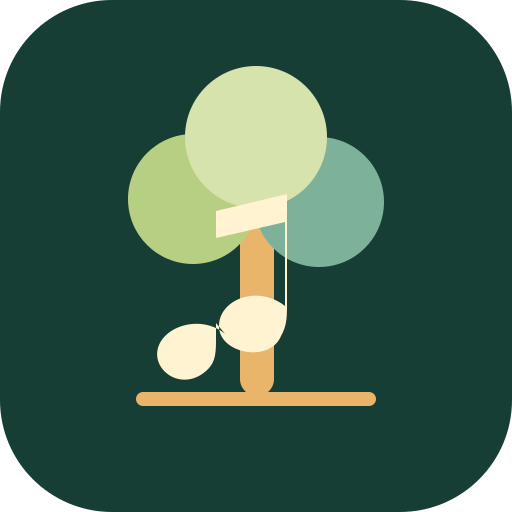
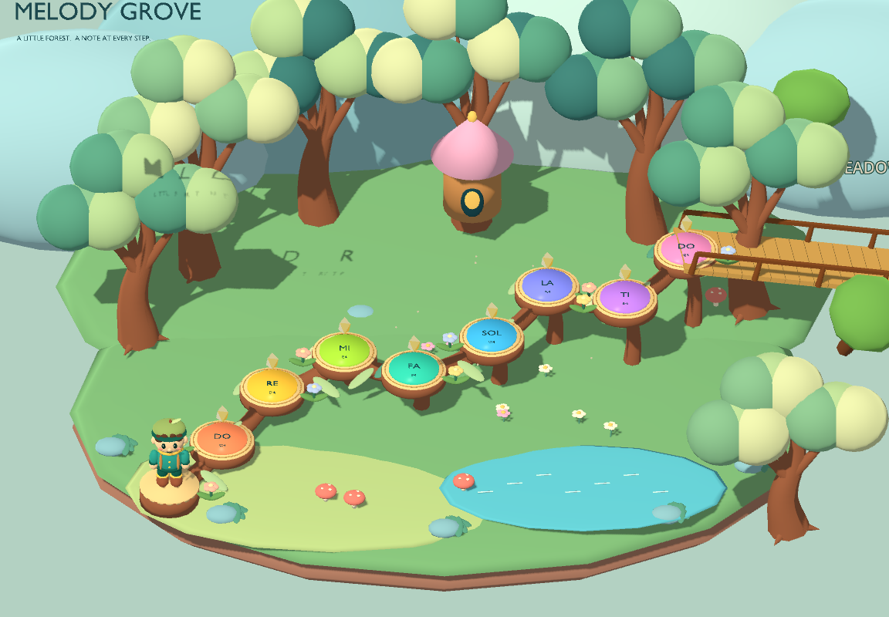

Melody GroveA PLAYFUL VOCAL WARM-UPONE STEP. ONE NOTE. YOUR VOICE.
Find your voice
in the grove.
Collect golden gems, remember little melodies, and climb to the treetops with your voice.
4 stages · 12 stars to earn · Microphone singing in stage 4

A whole octave of small discoveries.YOUR MUSICAL JOURNEY
Small steps. Growing confidence.
Stage unlocks and best scores are saved on this device.
TAKE THE FOREST WITH YOU
A little music, wherever you go.
Open once online, save the game, then add it to your Home Screen.
Save the game for offline play
The first download is about 14 MB. Keep this page open until it is ready.